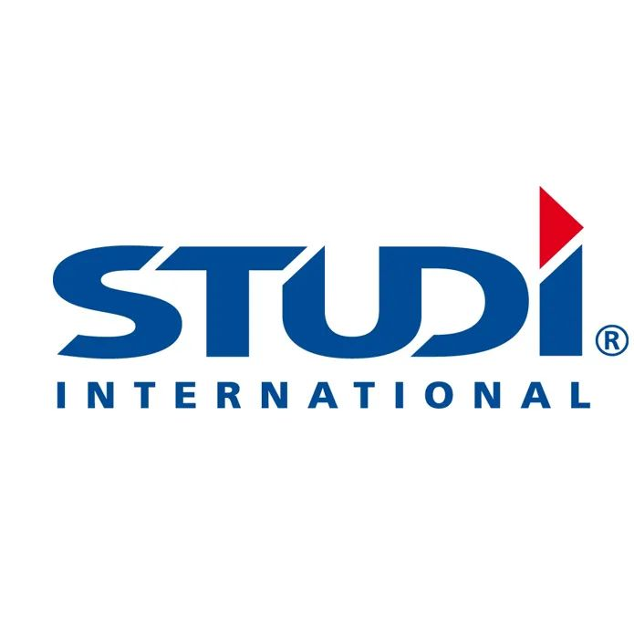

Saneamento e juventude gabonesa, levados a sério.
A ASI-ONG concebe e opera programas concretos de saneamento, saúde pública, economia circular do plástico e apoio a jovens líderes, a serviço dos bairros de Libreville e além.


Acreditamos que o saneamento de um bairro e o futuro de sua juventude fazem parte do mesmo trabalho.
Desde Akébé-Plaine, a ASI-ONG constrói soluções locais e duradouras: coleta de resíduos domésticos, transformação do plástico em materiais úteis, formação de jovens líderes, informação através da rádio comunitária, e acompanhamento sanitário das famílias.
Cada programa é pensado para durar além do financiamento que o lançou: é isso que distingue uma intervenção pontual de uma mudança real.
A ASI-ONG atua em todo o território nacional gabonês (zonas urbana, rural, fluvial e carcerária) e também conduz ações internacionais, nomeadamente no Burkina Faso, onde a associação está autorizada a atuar desde 2012.

Caros membros, caros parceiros, caros simpatizantes,
Neste início de ano, é com profunda gratidão e um entusiasmo renovado que me dirijo a cada um de vocês. O amanhecer de um novo ano é sempre um momento privilegiado: convida-nos a fazer um balanço das nossas ações passadas, mas sobretudo a projetarmo-nos para o futuro com audácia e determinação.
Hoje, os desafios que o nosso mundo enfrenta são colossais. As precariedades sociais, as vulnerabilidades humanitárias e as emergências ambientais lembram-nos todos os dias o quanto os nossos destinos estão ligados. Nada do que diz respeito ao ser humano e ao planeta pode deixar-nos indiferentes.
É precisamente no coração desta realidade que a missão da ONG-Action Sociale Internationale (ASI-ONG) ganha todo o seu sentido.
No início deste novo ano, lanço um apelo vibrante à mobilização de todas as nossas forças: aos nossos membros, coração pulsante da nossa organização, cuja energia e dedicação são o motor do nosso impacto; aos nossos parceiros, cuja confiança e apoio estratégico, financeiro e técnico são os pilares do nosso sucesso coletivo.
«A ação social e humanitária não é uma simples resposta à urgência; é um investimento profundo na dignidade do Homem e na preservação da nossa casa comum.»
Comprometamo-nos juntos, desde já, a fazer deste ano um período de impacto excecional. Façamos de cada um dos nossos projetos um porto de esperança para os mais necessitados e um gesto concreto para a salvaguarda de todo o planeta.
Que a nossa determinação coletiva seja a luz que ilumina o caminho daqueles que mais precisam. Desejo a todas e a todos um ano maravilhoso e frutífero, sob o signo da solidariedade, da esperança e da ação.
Seis alavancas, o mesmo terreno
Cada programa é autónomo, mas apoia-se nas mesmas equipas e nos mesmos bairros, para um impacto que se acumula ao longo do tempo.
Saneamento e pré-coleta
Coordenação dos circuitos de coleta de resíduos domésticos via SYPIG/SEPI, sob decretos municipais, em 11 zonas de Libreville.
Economia circular do plástico
Transformação dos resíduos plásticos coletados em pavimentos ecológicos, um projeto encaminhado para um pedido de patente OAPI.
Rádio ASI-FM
Uma rádio comunitária para informar, sensibilizar e dar voz aos bairros sobre as questões de saneamento e cidadania.
Les Leaders de Demain (LLDD)
Plataforma de formação e engajamento cívico para a juventude gabonesa, com missões internacionais de observação eleitoral.
Saúde pública
Educação terapêutica sobre a anemia falciforme; sensibilização e rastreio de VIH-SIDA, malária, tuberculose e Mpox (2024, com o Ministério da Saúde).
Um projeto para levar connosco?
Construímos os nossos programas com parceiros técnicos e financeiros.
Escreva-nosDo resíduo plástico ao pavimento ecológico
O nosso projeto principal transforma um problema visível dos nossos bairros, o plástico disperso, em materiais de construção úteis. Um ciclo real, em quatro etapas.
Nossas campanhas, vistas por dentro
Um panorama filmado das nossas ações no terreno, da mobilização comunitária às parcerias técnicas.
Campanha de sensibilização sobre VIH-SIDA em parceria com a CFHEG, eixo Ovan–Makokou (Ogooué-Ivindo).
Ver no Facebook →Sensibilização sobre VIH-SIDA e malária com a COVEC, eixo Ndéndé–Tchibanga: rastreio, panfletos, preservativos.
Ver no Facebook →ASI-ONG classificada entre as 5 primeiras num concurso de exposição de pavimentos ecológicos feitos a partir de plástico reciclado. Ver a publicação →
Nossas ações, em imagens
Um panorama do compromisso da ASI-ONG através das suas diferentes plataformas: saneamento, juventude, saúde, relações institucionais e observação eleitoral.


Competências que abrem portas
Além do saneamento, a ASI-ONG apoia percursos de formação profissional para públicos vulneráveis, em parceria com centros associados.
Formação em corte e costura no centro OULABOU KOMBILA Jeanne
Em benefício de pessoas com deficiência e carenciadas dos bairros subintegrados de Libreville, com o apoio da Embaixada dos Estados Unidos da América e do Ministério dos Assuntos Sociais, através da sua Direção-Geral. Esta colaboração permitiu estabelecer uma parceria com o Escritório Nacional de Emprego (ONE, atualmente Polo Nacional de Emprego), no âmbito do programa «Um Jovem = Uma Profissão», financiado pelo Banco Mundial. Ver no Facebook →
Um trabalho construído com parceiros
A ASI-ONG desenvolve os seus programas em ligação com instituições públicas, doadores e empresas presentes no Gabão.

O que fazemos, no terreno

Missão de contagem rodoviária no corredor Ndéndé–Doussala
Uma missão de 8 dias realizada com 11 agentes por conta da Studi International Gabon. Os agentes, com coletes amarelos, receberam uma formação prática em contagem rodoviária, supervisionada pelo Sr. Chérif DAFHER, Diretor técnico da Studi International Gabon.

Ficha técnica dos circuitos de coleta entregue à Câmara Municipal
A SYPIG/SEPI formaliza as suas zonas de intervenção junto das autoridades municipais de Libreville.

Campanhas de sensibilização e acompanhamento sanitário
VIH-SIDA, malária, tuberculose e Mpox: equipes mobilizadas no terreno para a informação e o rastreio junto das famílias.
A questão dos resíduos plásticos, à aproximação da Semana Ambiental
Um comunicado da ASI-ONG sobre a questão dos resíduos plásticos em Libreville. Ler no Facebook →

7ª missão internacional de observação eleitoral — Benin
Em abril de 2026, uma delegação LLDD/ASI-ONG de 6 observadores, credenciada pela CENA, cobriu 25 secções de voto em Cotonou e Ouidah durante a eleição presidencial beninense.
Missão internacional de observação eleitoral — Costa do Marfim
Em 25 de outubro de 2025, uma delegação ASI-ONG/LLDD observou a eleição presidencial marfinense, ao lado do LICAM-DH (Camarões), da ENVD e da ESA (Togo), sob a bandeira Synergie des Experts Électoraux Africains de la Société Civile. Foi produzida uma declaração preliminar conjunta.
A Árvore de Natal da ASI-ONG regressa em 22 de dezembro de 2026
Um momento de festa para as crianças dos bairros subintegrados de Libreville. Contribuir →
Fazer uma doação
A sua contribuição apoia diretamente os nossos programas de saneamento, saúde e acompanhamento da juventude gabonesa.
Doação direta por Airtel Money, disponível imediatamente.
Para uma doação por transferência bancária, contacte-nos através do formulário abaixo: enviaremos os nossos dados bancários com toda a segurança.
Tornar-se membro da ASI-ONG
Preencha este formulário para se juntar às nossas equipas e contribuir para os nossos programas.
Vamos falar sobre o seu apoio à ASI-ONG
Instituição, doador, media ou futuro voluntário: respondemos a cada mensagem.